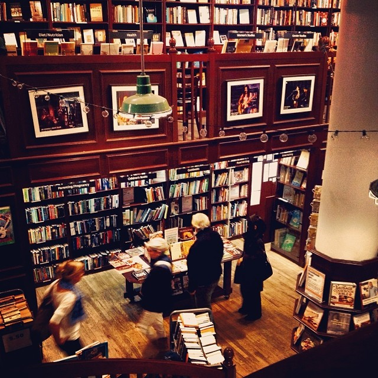
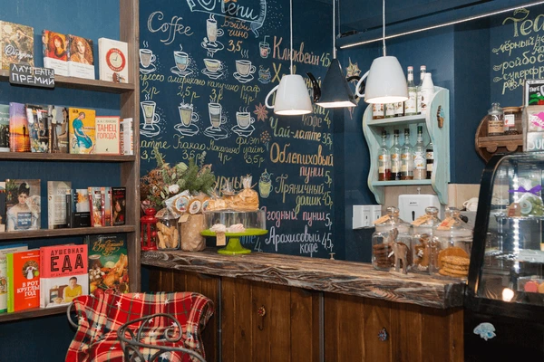
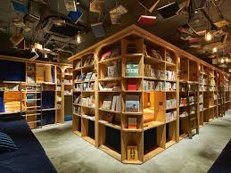

Tucked in the heart of the neighborhood, our cozy cafe offers the perfect escape from the daily rush. We serve freshly brewed coffee made from locally roasted beans, along with a variety of homemade pastries, sandwiches, and seasonal specialties. Whether you're catching up with friends, diving into a good book, or just need a quiet space to work, our warm atmosphere and friendly staff make you feel right at home. With free Wi-Fi, comfortable seating, and a welcoming vibe, it’s more than just a coffee stop—it’s your new favorite hangout. Come in, sip slow, and stay a while.
Our cafe takes pride in offering warm, attentive service that makes every guest feel like part of the family. From the moment you walk in, you're greeted with genuine smiles and a relaxed, welcoming atmosphere. Our baristas are passionate about coffee and happy to customize your drink just the way you like it. Whether you’re in for a quick takeaway or planning to linger over a latte, we’re here to ensure a smooth, enjoyable experience. Cleanliness, promptness, and hospitality are at the heart of what we do—because great service is just as important as great coffee.
The gallery of our cafe beautifully captures the heart and soul of our space. From cozy corners with vintage décor to the warm glow of sunlight pouring through our windows, every photo reflects the inviting ambiance we’ve created for our guests. You'll find snapshots of our handcrafted coffee, colorful dishes made with love, and the smiling faces of our baristas and regulars. The gallery also highlights our seasonal decorations, local art displays, and special events, giving a true sense of the vibrant community we serve. It’s more than a visual showcase—it’s a glimpse into the daily charm of our cafe.
  